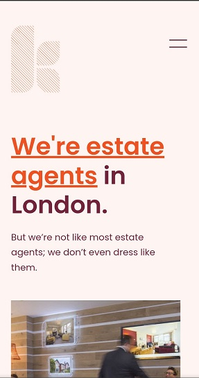
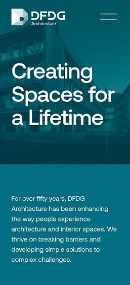

Visual Hierachy
Ashcroft
This site first draws the visitor in with a lovely animated introduction, then it went ahead wih showing the page that have the iconic Abraham Lincoln whic does not interfer with the bold intoductory message. All of them working in harmony to pull the visitor in such that they don't leave until they develop interest in what they are marketing,
Contrast
Keatons
The reason I feel this follows the principle of contrast well is because it employs the use of darker colors on bright background giving the users convenient vies without having to strain their eyes.
The Rule of Thirds
DFDG Architechture
The introductory image is framed on the intersecting line which creates a dynamic conversation that causes the user to analyse and communicate with the site